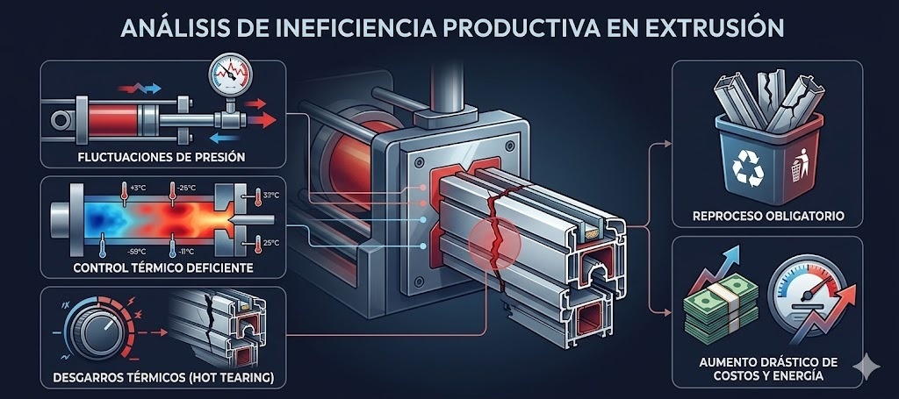
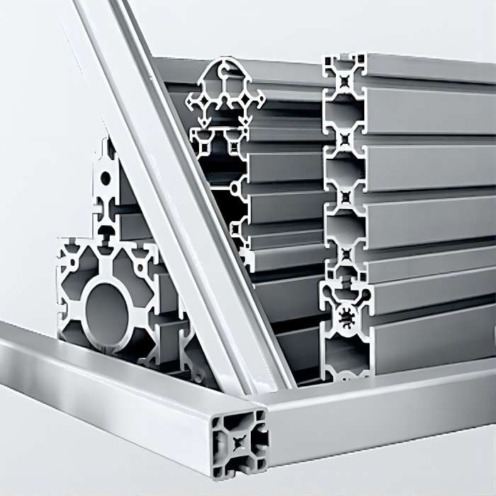
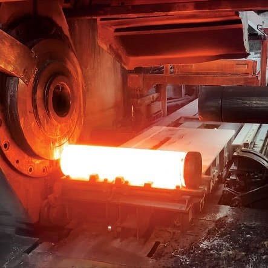
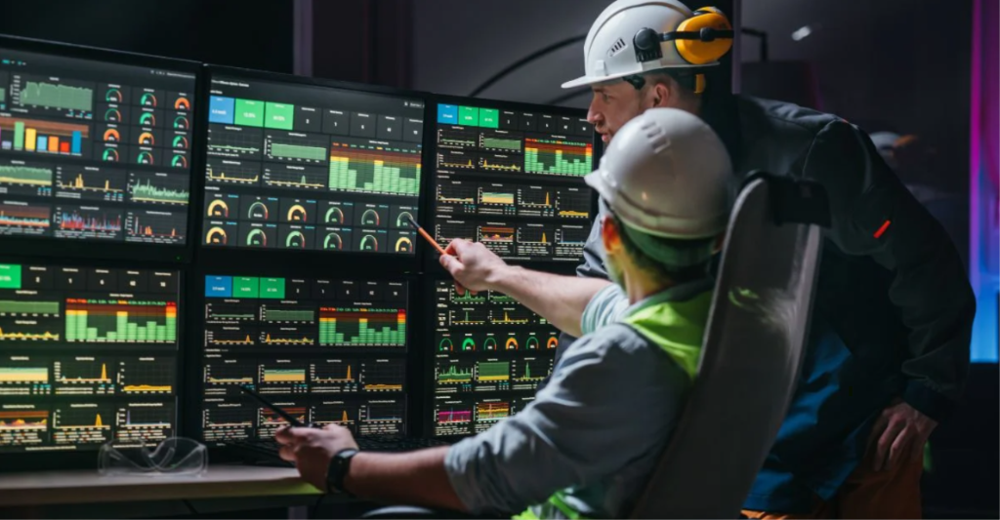

FACULTAD DE CIENCIAS E INGENIERÍA
Optimización de parámetros operativos y estabilización del control dimensional para la reducción de índices de rechazo industrial.
UPCH | Procesos de Manufactura | 2026
Este proyecto aborda la ineficiencia productiva en la línea de extrusión de perfiles de aluminio AA6063-T5. Mediante el análisis térmico y mecánico, se propone una ruta de manufactura optimizada que mitiga defectos como el alabeo y variaciones de espesor.
Validación técnica mediante cálculo de fuerza (133 Tonf).
Costo unitario estimado de $6.35 por pieza extruida.
Fluctuaciones de presión
Inestabilidad en el empuje del pistón hidráulico.
Control térmico deficiente
Variaciones de temperatura fuera del rango óptimo.
Desgarros térmicos
Hot tearing por velocidades de extrusión descalibradas.

Diseñar y analizar una propuesta de mejora para el conformado de extrusión en caliente que optimice parámetros y reduzca rechazos.
Evaluar el comportamiento plástico y las propiedades térmicas de la aleación serie 6000 bajo altas presiones.
Analizar variables de temperatura, velocidad del pistón, presión de extrusión y tasas de enfriamiento.
Describir detalladamente las etapas desde el precalentamiento hasta el estirado y corte final.
Establecer un sistema de medición de precisión para verificar tolerancias de espesor, planitud y angularidad (ASTM B221).
La aleación contiene Magnesio y Silicio, ofreciendo un equilibrio ideal entre extrudabilidad, resistencia a la corrosión y acabado visual.
| Propiedad Mecánica (T5) | Valor | Unidad |
|---|---|---|
| Resistencia a la rotura | 1 475 | kg/cm² |
| Límite elástico (2%) | 1 195 | kg/cm² |
| Densidad | 2,70 | g/cm³ |
| Conductividad térmica | 209 | W/m·K |
| Conductividad eléctrica | 43,0 | % IACS |

Diseñado para sistemas portantes en carpintería metálica y fachadas arquitectónicas.
Elevada inercia y resistencia a la flexión/torsión relativa a su peso.

Proceso de extrusión en caliente — tocho AA6063 a 460–500 °C
Es el único proceso económicamente viable para secciones transversales huecas, complejas y de longitud continua en aluminio.
Permite dividir el flujo de metal y resoldarlo en fase sólida dentro de la cámara, garantizando tolerancias ASTM B221.
La extrusión ofrece la mejor relación entre costo de herramental, acabado superficial y aptitud para secciones complejas.
Preparación de tocho y matriz (Precalentamiento).
Conformado por extrusión y enfriamiento.
Acabado (Estirado, Corte, Envejecido T5).
Control de Calidad y Despacho Final.
Proceso organizado en 15 etapas secuenciales para garantizar estabilidad dimensional.
Precalentamiento del Tocho
Un control térmico preciso evita el fenómeno de desgarro térmico (hot tearing).
Valores compatibles con prensas hidráulicas de capacidad media (500 a 2500 toneladas).
Modelo de deformación real (True Strain) según Groover (2019).
El esfuerzo de fluencia promedio (Ȳf) a 480 °C se estima en 15 MPa para la aleación 6063.
| Actividad | Tiempo Estimado | Recurso Principal |
|---|---|---|
| Corte y Precalentamiento | 45 min / lote | Horno de inducción |
| Ciclo de Extrusión | 3-4 min / tocho | Prensa Hidráulica |
| Estirado y Corrección | 1 min / tramo | Stretcher |
| Envejecido T5 | 3 Horas / lote | Horno de maduración |
| Control Metrológico | 2 min / pieza | Proyector de perfiles |
Capacidad teórica: 15-20 ciclos por hora por prensa.
$6.35
Costo/Pieza
Rendimiento base (η): 88%
El valor de recuperación de chatarra (75-85% del precio virgen) reduce el costo neto de materia prima.
Trend: Sensibilidad de Costo vs Merma
A mayor recuperación (η), menor impacto del costo de materia prima.
Ajuste dinámico de velocidad basado en temperatura de salida (± 5 °C).
Inspección del 100% de la producción para alertas dimensionales inmediatas.
Automatización PLC para trazabilidad completa de cada lote extruido.

El diseño de manufactura para el perfil AA6063-T5 es técnica y económicamente factible para demandas industriales medias.
Implementar control isotérmico e inspección láser para mitigar la causa raíz de los defectos dimensionales.
¿Preguntas? | www.upch.edu.pe | UPCH Ingeniería